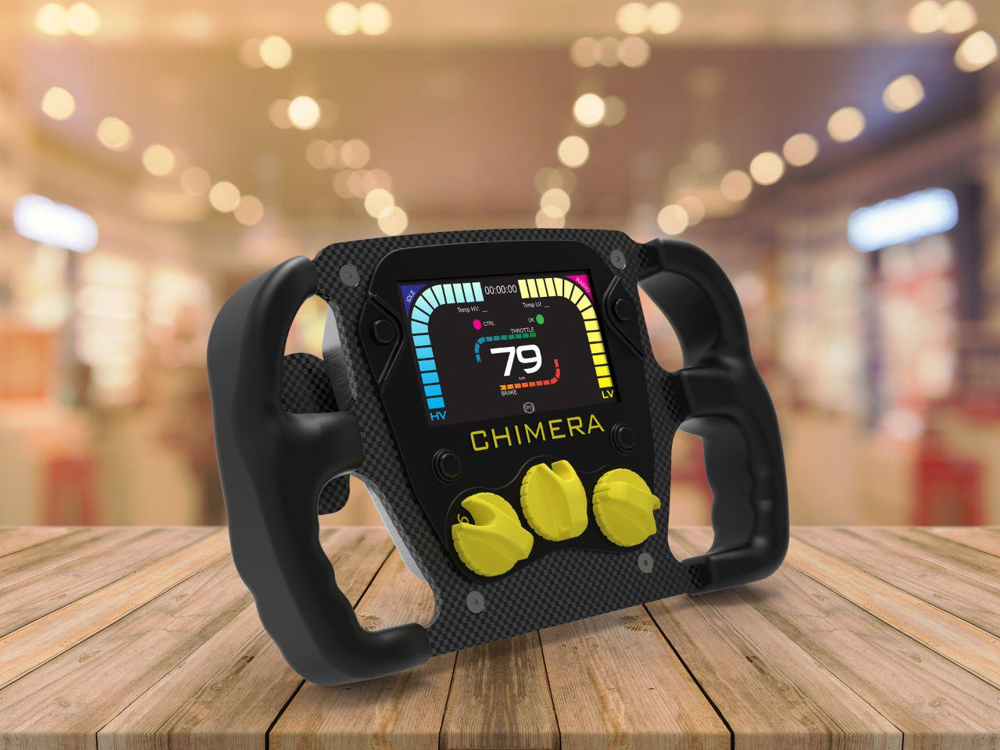
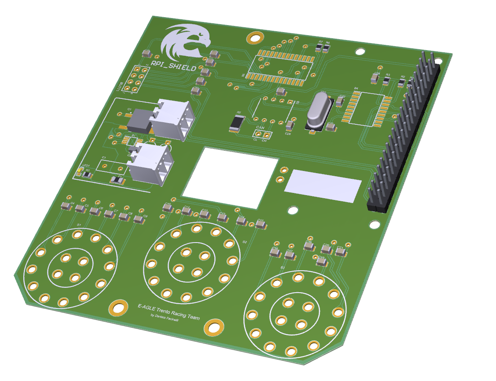
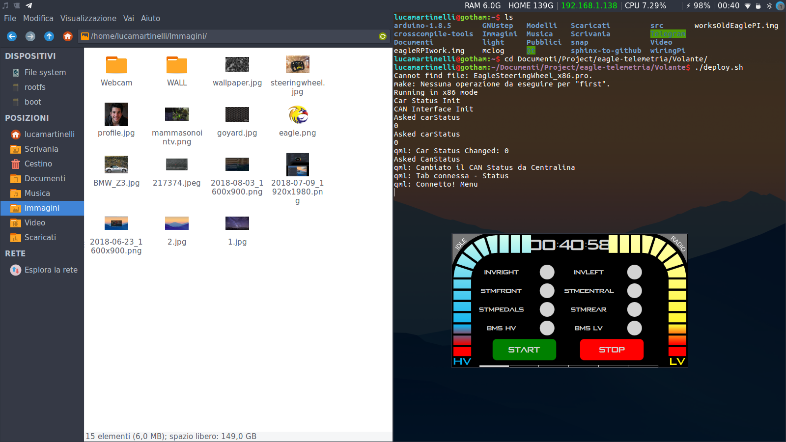
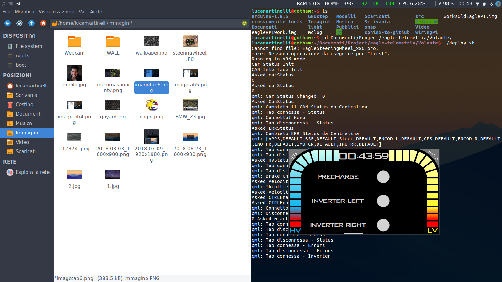
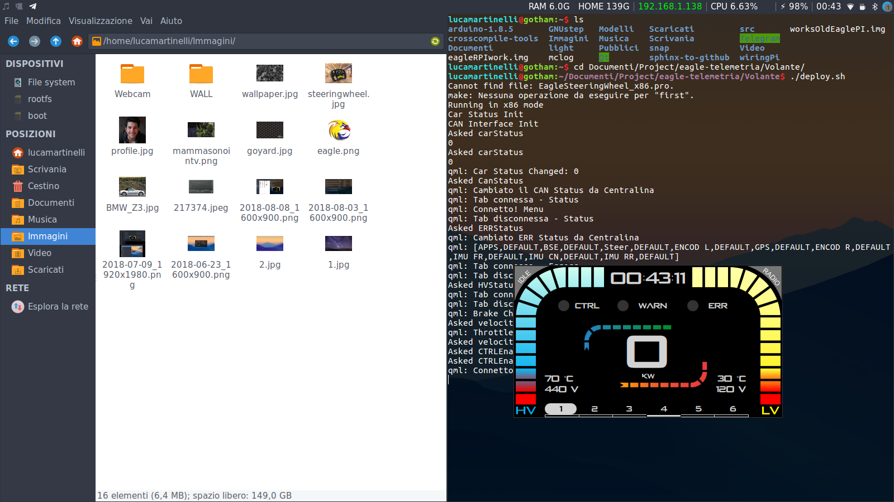
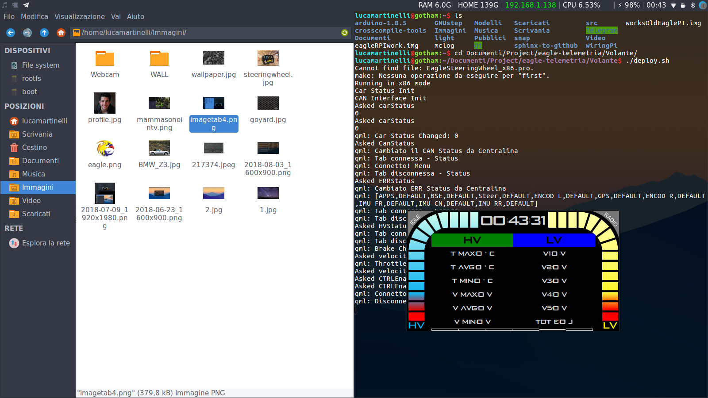
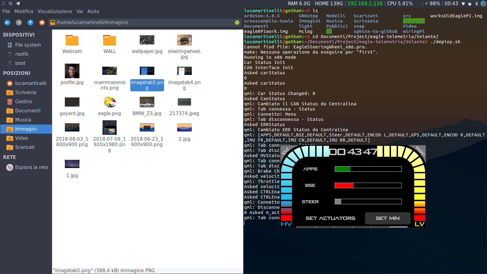

Steering Wheel of Chimera Evoluzione¶
Introduction¶
When we designed our steering wheel, we mainly thought about what the driver needs during the race. According to our necessity, we used an Agile approach: the “client”, our driver, has an active role in the software development and also in the design of the Steering Wheel.
Prototype¶
We started from a blank page, drawing with a pen the interface as a low fidelity prototype: here, the whole development team worked together attentively considering what the driver had to say. The next phase involved the high fidelity prototype: our designer concretized our idea through Illustrator which made things easier, mostly as we had the possibility to export the assets on Photoshop. In this way, the objects were easily manageable and ready-to-use in our UI, codes with C++.
The Framework used is Qt 5.10.1, being it the most used in Automotive industriess. The result of our work is an eandearing interface composed of 6 tabs.
The thing that makes our Steering Wheel so unique is the assets, which are designed by us and inspired to the racing world — in particular to the racing game. We choose to use Raspberry Pi as target board, it makes things easier when we had trouble during the development, the RPI has it own Shield design by us to extend the GPIO and integrate CAN-BUS to comunicate with the others boards of the vehicle. Also regarding the case and the front panel they were design and produce by us bla bla bla, the manettini sono stampati in modo figo perchè stampiamo in 3d e abbiamo la robbba più bbbona
One of the most important choices to have the best HMI possible was to display the state of charge of the HV and LV and the state of the vehicle (IDLE, SETUP, RUN and STOP) from each tab as a frame, considering the UI it’s the most apparent change. This choice was very important during the development, because it determined the order of our work starting from the frame and going on only after with the tabs.
Errors Tab¶
The first one is called “Errors Tab”: through this, we can see if there are any critical errors on the car; if there is none, we can start the car and, later, we can stop it. These actions activate or deactivate the tractive system, so the starting procedure must be done every time before turning on the engine. The usefulness is in the fact that if there are errors and the driver doesn’t notice, the car won’t start.
Warnings Tab¶
The second one is called “Warnings Tab”, to see if there is any warning on the car. Unlike errors, warnings are not system critical and are there only to inform the driver if a certain sensor is not working properly. If there is a warning, the car can still turn on and if during the race a warning appears, the car will stay on. These values are updated every 500ms.
Status Tab¶
In the third tab we can see the status of the precharge, as well as the status of the inverters. We can also decide to turn an inverter on or off. This procedure must be done before going in ready-to-drive mode: if the inverters are off or cannot be started (which they are by default), the ready-to-drive mode won’t be enabled.
Racing Page¶
The fourth tab, also called “Racing Page”, is the most important one. From here, the driver can go in ready-to-drive mode by clicking the button in the top left corner. In the middle of the screen, the driver sees how many KW of power he’s requesting to the motors, while on the bottom he can see the motor map he is in. Motor maps are used to limit the power available, with map 1 being -20% (which means reverse), map 2 being 20%, map 3 being 40% and so on until 100%. The map can be changed before going in ready-to-drive. In this page the driver can also see the temperatures of the HV and LV batteries, as well as their voltage. This data is shown respectively in the bottom left and right of the screen. In the central part of the screen there are two more indicators, which show how much throttle and brake is applied at any given moment. At the top of the tab there is also an indicator which shows wether the control is on, if there is an error and if there is a warning. These indicators update every 500ms, just like in the other tabs.
Battery Tab¶
The sixth tab, also called “Battery Tab”, shows the status of the batteries: here is possible to see the minimum, average and maximum of temperature and voltage of HV and LV
Sensors Tab¶
The fifth tab is essentially sensors (APPS, BSE and STEER). Here, we can setup them with an interactive procedure staring from the MIN and ending with the MAX. It’s very important to us in order to remove the use of an external device for this procedure.
Conclusion¶
We consider our work not an ended project, on the contrary is a good point to start for the next year. The solution that we developed allowed us to learn better QT, and find some issues to solve and improve as the time needed to the RPI to start. Considering the board, we want to move our code something less amateur like an STM32.